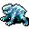

元素のカード Elements card
英語版 CrawlWiki の記事「Elements card」(0.32 向け、2025-01-22 版)の翻訳です。原文の著者は編集履歴をご覧ください。
この記事は 0.32 の時点の内容で、最新の 0.34 とは違うところがあるかもしれません。
| このカードには砂嵐に潜む巨獣の姿が描かれている。
このカードを引くと、四元素の力を持つ3体のモンスターが召喚される。 |
元素のカードは、何らかの元素と結びつきのある生き物を召喚する。1回引くごとに四元素のうち3つが選ばれ、出てくる獣はカードの威力段階に応じて強くなる。
| 火 | 氷 | 風 | 土 | |
|---|---|---|---|---|
| 威力段階0 | b |
Y  氷の獣 |
h |
l |
| 威力段階1 | 9 |
h |
k |
Y |
| 威力段階2 | D |
D |
S |
9 |

召喚のデッキに入っている。
変更履歴
- 0.31で、炎の渦が火炎コウモリに、鉄のゴーレムが凶暴なガーゴイルに置き換えられた。
- 0.20で、まだらのドラゴンが炎の渦に置き換えられた。
- 0.19で、岩石の甲虫がカトブレパスに置き換えられた。また、デッキが簡略化されたとき、元素のカードは残されたわずか23枚のうちの1枚になった。
- 0.18で、サラマンダーの炎術師がファイアドラゴンに置き換えられた。
- 元素のカードは0.16で、廃止された群獣のカードに代わって追加された。
関連項目
| デッキ | ネメレクスのカード |
|---|---|
| 破壊のデッキ | 堕落 • 球体 • 苦痛 • 嵐 • 硫酸 • 暴走 |
| 脱出のデッキ | 雲烟 • 霊薬 • 放浪 • 玄室 • 加速 |
| 召喚のデッキ | 舞踏 • 元素 • 幻影 • 群れ • 五芒星 • 野伏 |
| 懲罰のデッキ | 豚 • 拷問 • 亡霊 • 憤怒 |